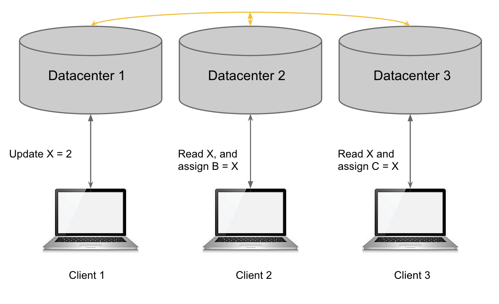

Introduction
Learning Objectives
This project will encompass the following learning objectives:
- Learn about various levels of consistencies (Strong, Causal and Eventual) that can exist in a distributed data store.
- Compare the various tradeoffs that exist in using different levels of consistency.
- Implement a distributed key-value store with different levels of consistency.
Consistency in Distributed Applications
In large globally distributed applications, the data for the application may be replicated across various locations across the globe. This is done for a number of reasons. Some of the important reasons are listed below:
- Reliability/Availability: Having a distributed data store eliminates a single point of failure for the application data.
- Performance: Having multiple replicas for the application data can reduce the potential of one data store being overloaded with requests, which could become a potential bottleneck to the application.
- Latency: Having multiple replicas for the same data can help in reducing access time for requests coming from different geographic locations, as the data can be served from the nearest datastore.
Most large scale applications these days are globally distributed. For example, Facebook hosts its application servers and data across several data centers in order to reduce the latency and access time (which in turn increases usability of the application) for users from across different geographic locations. A Facebook user from anywhere in Europe may be served a page from the application running in the Dublin datacenter whereas the users from the United States may be served from the application server hosted in the datacenter located somewhere within the United States.
Having multiple copies of the same data across different datastores that are globally distributed for the same application raises the problem of data consistency. An important question to ask is how often does the data between the various datastore replicas need to be synchronized. Different application requirements might require different levels of consistency in the replicas. In the next paragraph, we describe the different levels of consistency that are possible in a distributed key-value store. Different levels of consistency can be employed, however, there is a tradeoff between how fresh the data ought to be in the replicas and an application’s performance requirements.
An Example of Inconsistency
Consider the following setup with three datacenter nodes and three clients. Client 1 reads from Datacenter 1, Client 2 from Datacenter 2 and Client 3 from Datacenter 3. The data is replicated across the three datacenter instances. Any update occurring at a Datacenter node has to be reflected in the other two Datacenter nodes in order to keep the data consistent.
Figure 1: The architecture of the distributed datastore
Let a particular record be denoted by X. Its current value is 1 in all datacenters. Now, the following operations (shown in Figure 2) occur:
Figure 2: Possible inconsistency in different datacenters
Let’s say that client 1 performs the update X = 2 at timestamp 1. Assuming that the two clients read X at timestamp 2 (i.e., after the update X=2 has been completed on datacenter 1), what are the values of B and C? Turns out, B and C can be any of 1 or 2. The answer depends on the consistency model implemented by the system designers.
Consistency Models
Ordered from the strongest to the weakest, these are the various consistency models that we will be discussing in this writeup.
- Strict
- Strong (Linearizability)
- Sequential
- Causal
- Eventual
Strict Consistency
In strict consistency, each operation must be stamped with an absolute global time and all operations must be executed in the order of their timestamps. Further, each read must get the latest written value. However, in a distributed system, it is hard to synchronize clocks to be exactly equal, and the time between instructions can be less than the time taken to communicate with the other processor(s)/node(s) to let them know about the issuing of an operation. Thus, strict consistency is hard to achieve on multiprocessors, let alone distributed datacenters. Let us talk about the other consistency models in the context of this project.
The Strong consistency model is basically sequential consistency model with an additional requirement. To understand the Strong consistency model, you must first understand the sequential consistency model.
Sequential Consistency
Sequential consistency is achieved when all operations were executed in some sequential order and all replicas see the operations in the exact same order. Hence, in the case of this project, all datacenters must see the operations in the same order, and any write occurring at a datacenter node must be instantly visible at the other datacenter nodes. To achieve this, operations for the object being updated must be locked until the updates have been made across all replicas.
As shown in the following figure, while the value of X is being updated at Datacenter 1, the clients reading from Datacenters 2 and 3 are locked from accessing X. They can’t read or write to the object X, but they can read/write to the other objects in those Datacenters. Once the value of X has been updated across all Datacenters, Clients 2 and 3 can read the latest updated value from their respective Datacenters.
Figure 3: When an update is going on for an object X, the other clients are prevented from reading or writing the value of X across all data centers. This way, no client will receive stale data (old value of X)
Strong Consistency (Linearizability)
Strong consistency is sequential consistency with an additional requirement. In sequential consistency, every operation had a timestamp associated with it. This timestamp can be obtained through a vector clock. The timestamps of two operations can be compared in order to determine whether one operation occurred before the other or if the two operations were concurrent. If two operations were concurrent, sequential consistency gives you the liberty to order those arbitrarily as long as the same order is seen by all nodes in the distributed system. In Strong consistency, however, each operation receives a global timestamp sometime during its execution. This is in contrast to strict consistency in which the timestamp is the exact global time when the operation was issued. If Strong consistency, all operations must be ordered according to their timestamps.
In this project, you will be implementing strong consistency. The order in which the operations arrive will be used as the timestamp for ordering them. To achieve strong consistency, you must make sure that at any point of time, all the clients should read the exact same data from any of the datacenter replicas.
Figure 4: A banking system’s datastore
The diagram above shows a scenario where strong consistency needs to be enforced. Let’s say that a banking application has its datastores distributed across various locations in order to serve its customers effectively. In this scenario, let’s say Joe and his wife Jane hold a shared account in the bank (which currently has $1000 balance). If both of them try to withdraw money from the shared account simultaneously from two different locations as shown in the figure above, there is a possibility for an inconsistency as the two updates can deduct the amount ($50) twice respectively in the replicas where the requests came, but not $100 overall. This is not an acceptable situation for a banking application. In order to prevent this, the banking application must ensure strong consistency across its datastores as it ensures that only one operation can update all the replicas at a time. If a user is currently trying to update the datastore (by withdrawal or deposit), the banking system should block all other users from updating this specific user’s data in all its datastores. The next user is allowed to modify the datastore only once all the datastores are made consistent from the previous transaction. Although this is a desired solution, it adds a lot of latency to each update. Not all applications might require strong consistency.
Causal Consistency
Causal consistency is a slightly weaker form compared to sequential consistency. Causal consistency refers to the level of consistency where the writes can be seen by different clients in different order, except for causally related writes. The order refers to the order of operations that are requested to the distributed datastore. Two writes are said to be “causally” related if they are dependent on each other in some ways (For example, operation 1 is PUT(A, 2) and operation 2 is GET(A). These two operations can be causally dependent since the result of the second operation depends on the first). If two writes are causally related, then these writes need to be seen in the same order in all the clients. Replicas can be updated periodically or based on some predefined trigger. Causal consistency model provides much better performance over strong consistency model, as all the datastores will not be blocked completely for each and every operation.
Figure 5: A social network’s (InstaSnap) datastore
Consider the example of a distributed photo sharing social network (InstaSnap) application which employs causal consistency in its datastore. InstaSnap values low latency over data staleness. Different users using the social network may see different data. For example, if user 1 updates a particular photo on the datastore in US-West, user 2 may not get the update in the datastore in Japan at the end of the operation as the local datastore may not be updated immediately as in the case of strong consistency model. Also, all the users should see the order of comments on the photo in the same order (Ordering for comments should be strictly ensured, and the update of comments coming from across the globe can be considered causally related). The above described scenario is acceptable for a social networking application. Hence, causal consistency might be suited for some scenarios.
In the context of this project, you will implement causal consistency in a distributed key-value store where all the updates on a particular key are ordered across all the replicas.
Eventual Consistency
The requirement to achieve eventual consistency is that if no new updates are made, all reads will eventually return the last updated value. This relaxes the requirement of having to locking all the datastores when performing an operation.
In the context of this project, the replica updates can happen after a long time, but the values for an object should be consistent across all datacenters at some point of time, T2, if no updates are made to that object after a certain point of time, T1, where T2 comes after T1. Until these values become consistent across all datacenters, there will be some datacenters which might return stale values.
For example, consider the architecture shown in Figure 1 and assume that the value of X is 1. Now, an update request comes for Datacenter1 which updates the value of X to 2. Once this update has been completed on Datacenter 1, if the value of X is read from Datacenter 2 or Datacenter 3, there is a possibility that one (or both) of them may return the stale value of X (which is equal to 1). However, if no more updates are made to X, eventually after some time, all Datacenters will have the updated value of X (which is equal to 2). This is called eventual consistency.
Note
It becomes crucial to decide the level of consistency in an application that uses a distributed datastore, because this will have direct implications on the performance and speed of the application accessing the data store. If your application requires that all client read the same data at any point in time, then it has to use a strong consistency model. Using a strong consistency model can reduce throughput as the datastores need to be locked each time an update operation is performed. Using a causal or eventual consistency model can increase throughput of the operations, but at the cost of the clients receiving stale data.
The Scenario
Carnegie Records (CR) has been extremely successful in the music content delivery business. CR is currently expanding to build its own online store where it plans to sell music and accessories. In order to support this online store, it has been decided that a fast in-memory distributed key-value store is required. Now that you are a rockstar cloud programmer at CR, you have been assigned the task to build the distributed in-memory key-value store required for the current scenario. The distributed key-value store is intended to serve the following purpose:
- The PUT requests to the distributed datastore.
- The GET requests to the distributed datastore.
It has been decided to host the datastores in three high traffic regions (US-East, US-West and Singapore). Figure 5 shows the distributed key-value store. In the subsequent sections, the details of the store have been described in detail.
Figure 6: CR’s Key-Value store
The key-value store should be designed to offer two levels of consistency, since the online store could require different levels of data consistency for its different features. Since you are new to consistency, you are going to implement two different levels of consistency. In order to support this, you are expected to develop your code in the coordinator of the backend store to support these two different consistency models.
Resource Tagging and AMIs
For this project, assign the tag with Key: Project and Value: 3.5 for resources
| AMI ID | AMI Type | Instance Type |
|---|---|---|
| ami-be6551d6 | Datacenter Instance | t1.micro |
| ami-de6155b6 | Coordinator Instance | t1.micro |
| ami-cc6155a4 | Client Instance | m1.small |
Project Tasks
In this project, you will be implementing the Coordinator required to manage the three datacenters. The project consists of two parts. In part 1, you will implement strong consistency for the key-value store. In part 2, you will extend the implementation of strong consistency to support causal consistency for the key-value store.
Tasks to complete
- Launch 3 datacenter instances (ami-be6551d6) of type t1.micro in the US-East region. The datacenter instances contain the code required for the key-value store, and you do not have to program the datacenter instance. Make sure your security group allows traffic on port 8080.
Note
Although we assume that the datacenter instances are located in different regions, for the purposes of this project, the three datacenter instances have to be provisioned the US-East region. We have instrumented different delays in PUTs to account for the increased latency of remote datacenters. GETs have negligible delay since they are always fetched from a local datacenter.
- Please wait for about 5 minutes for the datacenters to start running. You can test if a datacenter is running using the URL
DATACENTER-DNS:8080/testfrom your browser. - Launch a coordinator instance (ami-de6155b6) of type t1.micro.
- Log on to the coordinator instance. In the folder
/home/ubuntu/Project3_5/vertx/bin/, you will find a java file,Coordinator.javawhich needs to be completed by you. - To start the coordinator, use the command
./vertx run Coordinator.java - In part 1, you will be extending the skeleton implementation in Coordinator.java to support strong consistency for the key-value store.
- In part 2, you will extend this implementation to add support for causal consistency.
- The requirements for both the parts are explained in the Requirements section. The following sections will help you in completing the two parts. Please read all the sections carefully before starting.
Endpoints and APIs
Coordinator.java is a web server (Vert.x) having the following endpoints.
Coordinator-DNS:8080/consistency?consistency=TYPE_OF_CONSISTENCYThis endpoint is used by the auto-grader to specify the type of consistency the coordinator has to support. The expected values are strong and causal. You need to use this value to program your coordinator to handle the expected consistency mode.Coordinator-DNS:8080/put?key=KEY&value=VALUEThis endpoint will receive the key, value pair that needs to be stored in the datacenter instances.Coordinator-DNS:8080/get?key=KEY&loc=LOCATIONThis endpoint will receive the key for which the value has to be returned by the coordinator. The coordinator has to return the value as the response to this request.
This request also contains a location parameter which specifies the datacenter from which the value has to be fetched by the coordinator. LOCATION is 1 for datacenter-1, 2 for datacenter-2 and 3 for datacenter-3.
In order to help you program the coordinator instance, we have provided a helper class with 2 API methods that you can use. The following are descriptions of those API methods.
KeyValueLib.PUT(String datacenterDNS, String key, String value) throws IOException- This API method will put the value for the specified key in the specified datacenter instance.KeyValueLib.GET(String datacenterDNS, String key) throws IOException- This API method returns the value for the specified key from the specified datacenter.
Note
None of the API methods described above are synchronized (In other words, any number of threads can call these API methods simultaneously).
Latency and geographic locations
In the real world, the datacenters will be spread across the globe. This can lead to varying latencies for different datacenter instances. In this project, we will assume that the three datacenters are spread across the globe (although you will be launching all three datacenter instances in the US-east region). Since the datacenter instances are supposedly spread across the globe, we have instrumented the following average latencies to occur for PUT requests sent to different datacenter instances.
| Datacenter No. | PUT RTT latency | GET RTT latency (Always local) |
|---|---|---|
| Datacenter 1 (US-east) | ~5 ms (negligible) | ~5ms (negligible) |
| Datacenter 2 (US-west) | ~200 ms | ~5ms (negligible) |
| Datacenter 3 (Singapore) | ~800 ms | ~5ms (negligible) |
As you can see, different datacenter instances have different latencies. This has direct implications when you perform operations in the coordinator instance. For example, a PUT operation to datacenter 3 will take at least 800 ms on average where as a PUT operation to datacenter 1 will take only a few ms.
Since the GET requests will always be served from the local datacenter instance, GET latency can be considered as negligible (The coordinator can be considered to be distributed too, although you will be working with only one coordinator).
Requirements
Coordinator.javashould process multiple requests simultaneously (multi-threaded) and should be non-blocking (eachPUT(write) andGET(read) request should be processed in a separate thread). Starter code for this is already given inCoordinator.java- Assume that the timestamp at which a request arrives at the coordinator instance is the reference for ordering the requests. In other words, a request which has an earlier timestamp should always be processed first over a request with a later timestamp. (This assumption is to ensure that the requests sent from the client are received in the same order at the coordinator instance)
- In strong consistency, every PUT to the key-value store should be atomic (per key). This means that at any point in time, there can be only one PUT operation per key being performed in the coordinator. To give an example, let’s say your coordinator gets two PUT requests with key “A” at timestamps 1 and 2 respectively. The request that arrived at timestamp 1 should be processed first (the second request should be blocked in the coordinator meanwhile). Once the key value pair has been successfully put in all the three datacenters, the second request (which arrived at timestamp 2) needs to be processed. Also, the PUT requests for multiple keys can be performed in parallel (This means that the locking of the datacenters has to be done at key level).
- In strong consistency, every GET to the key-value store should read the last written value. If a GET request arrives when a PUT request is currently being performed in the store, the GET operation should be blocked until the PUT is completed. Once the current PUT is completed, the GET operation should be performed.
- In causal consistency, every PUT should be performed in parallel across datacenters, but with one restriction. The order of PUT operations for a particular key should be the same in all the datacenters. For example, if three operations PUT(key1, 1), PUT(key2, 2) and PUT(key1, 3) come to the coordinator in that order, the coordinator should perform the first two operations in parallel, while making the third operation wait for the first operation to complete in a particular datacenter (since first and third operations are on the same key). To know the order of requests, read the second rule. Note that unlike in strong consistency, you should not lock all the datacenters for a PUT operation in causal consistency model, but only lock one datacenter at a time.
- In causal consistency, any GET should not wait for any PUTs to complete, and has to return the current value present in the datastore (possibly a stale value) immediately.
- A PUT operation that has an earlier timestamp should never overwrite a PUT operation that has a later timestamp in any datacenter instance for any consistency model.
- You must not store any key value pairs permanently in the coordinator instance at any point in time (temporarily storing key-value pairs during the processing of requests is allowed). The auto-grader checks for this in some ways.
- Your coordinator should be programmed in such a way that the consistency mode of the backend stores can be dynamically changed by using the first endpoint defined in the “Endpoints and APIs” section. You can also use this endpoint to re-initialize the data structures that you use in your coordinator. The auto-grader will be using this to test both the consistency modes one after another during submission.
Key Assumptions
- Datacenter 1 is the primary datacenter, i.e. all the PUT requests have to go to datacenter 1 first. This assumption is to prevent two requests ending up in a deadlock when trying to acquire locks for a PUT. (For example, if request 1 has acquired lock on datacenter 1 and is waiting to acquire a lock on datacenter 2 and request 2 has acquired lock on datacenter 2 and is waiting to acquire lock on datacenter 1, the two requests are in a deadlock).
- The latency involved in a GET operation is always negligible (~5 ms) since GET operations read from a local datacenter instance.
- The datacenter instances are assumed to be fully fault-tolerant, i.e., the datacenter instances can be assumed to never fail in any scenario for this project. When implementing locking on the datacenter instances, you can assume that the lock and PUT requests will always succeed. This assumption is meant to reduce the complexity of the locking mechanism that you have to implement. As a hint, you do not need to implement the Two-Phase Commit (2PC) mechanism.
Hints and Suggestions
- You need to perform explicit synchronization for ordering the PUT requests. You need to implement a mechanism to lock the datacenters before performing a PUT operation on them. Be aware of the situation that two or more requests trying to perform a PUT or GET operation can lead to a race condition. You need to implement a mechanism to acquire locks for requests before performing the operations (PUT/GET) on the datacenters. Your code has to be free of race conditions.
- There are several ways to handle locks (and race conditions). Java provides a nice way to handle synchronization between multiple threads. You may also want to read about synchronization in Java in detail before starting.
- You may also find the BlockingQueue provided by Java useful.
- You could use a FIFO queue to maintain the order of requests. Remember, the timestamp is the key for ordering.
- At any point in time, if you want to reset your datacenters for testing, you can restart the datacenter instances. Although, you never have to restart the datacenter instances for the auto-grader.
- Don’t forget to clear your data structures when the consistency mode is changed.
- You can test your implementation for Part 1 (strong) and Part 2 (causal) separately using the consistency checker. Before the final submission, both the parts should be working fully.
- Start early, particularly if you aren’t familiar with concurrent programming. Although implementing the coordinator may not take more than 100 lines of code, you may take more time debugging and getting the concepts right.
Grading
To complete the project, after completing the tasks above, you can verify your implementation using the auto-grader. Follow the steps given below to complete your submission for this project.
-
Launch a m1.small (ami-cc6155a4) client instance.
-
In the client instance, go to the auto-grader folder which is located at
/home/ubuntu/Project3_5/ -
The auto-grader folder has the following files - consistency_checker, config.prop, quiz.sh, submitter and references.
-
We have provided a consistency checker executable called consistency_checker. In order to use the consistency checker, you need to fill the details of the coordinator, the datacenter instances and the consistency level in the file config.prop (Ensure that the order of the datacenter instances is same in config.prop and the Coordinator). The consistency_checker script has several test cases to check your implementation. Once you have updated the details in config.prop, you can run the consistency_checker using the command
./consistency_checker consistency_type. The value of consistency_type can be either strong or causal. The script runs a series of tests and also reports if a test case has succeeded or not. Before running the consistency checker, ensure that the Coordinator and all the datacenters are running. -
Once you have verified your implementation using the consistency_checker, you need to submit the results to TheProject.Zone using the executable submitter. You need to copy your implementation of the coordinator
Coordinator.javato the/home/ubuntu/Project3_5folder of the client instance. Also make sure you add all the references (links and Andrew IDs) in the references file in the same folder. -
Once you are ready to submit your code, execute the submitter by running
./submitter code. The submitter executable runs the consistency checker for both strong and eventual consistencies one after the other, and then it reports the results to the auto-grader server. After running this command, you should be able to see your scores on TheProject.Zone in a few minutes. Note: Ensure that you place Coordinator.java in the Project3_5 folder in the client instance before running submitter. Not submitting Coordinator.java can lead to 100% penalty in this project. -
After completing the coding exercise, you are expected to complete a short quiz. The quiz questions are present in the file
quiz.sh. After you complete answering the questions, you can submit the quiz to the auto-grader using the command./submitter quiz. Note that you are limited to 3 quiz submissions, so please choose carefully before submitting. -
NOTE: The consistency_checker script does not check for all possible scenarios. The TAs will be manually grading your code, specifically looking for code that can lead to race conditions. Ensure that you have thoroughly tested your code for correctness and the requirements mentioned earlier. We might give a nice bonus for well written (and well commented) code too.
Project Grading Penalties
Besides the penalties mentioned in recitation and/or on Piazza, penalties accrue for the following:
| Violation | Penalty of the project grade |
|---|---|
| Spending more than $10 for this project checkpoint | -10% |
| Spending more than $20 for this project checkpoint | -100% |
| Failing to tag all your resources for this project | -10% |
| Using any instance other than the ones specified in the writeup | -10% |
| Attempting to hack/tamper the auto-grader or consistency checker | -100% |
| Not submitting/Forgetting to submit Coordinator.java during final submission. | -100% |